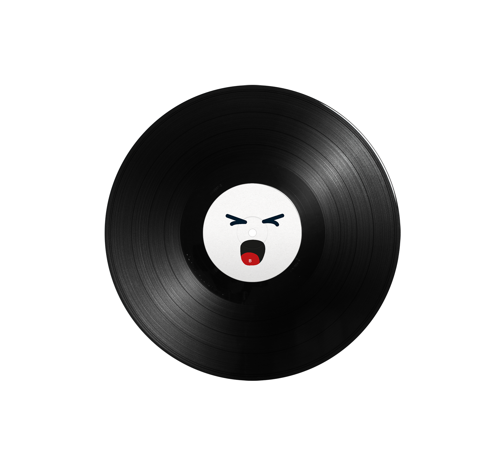
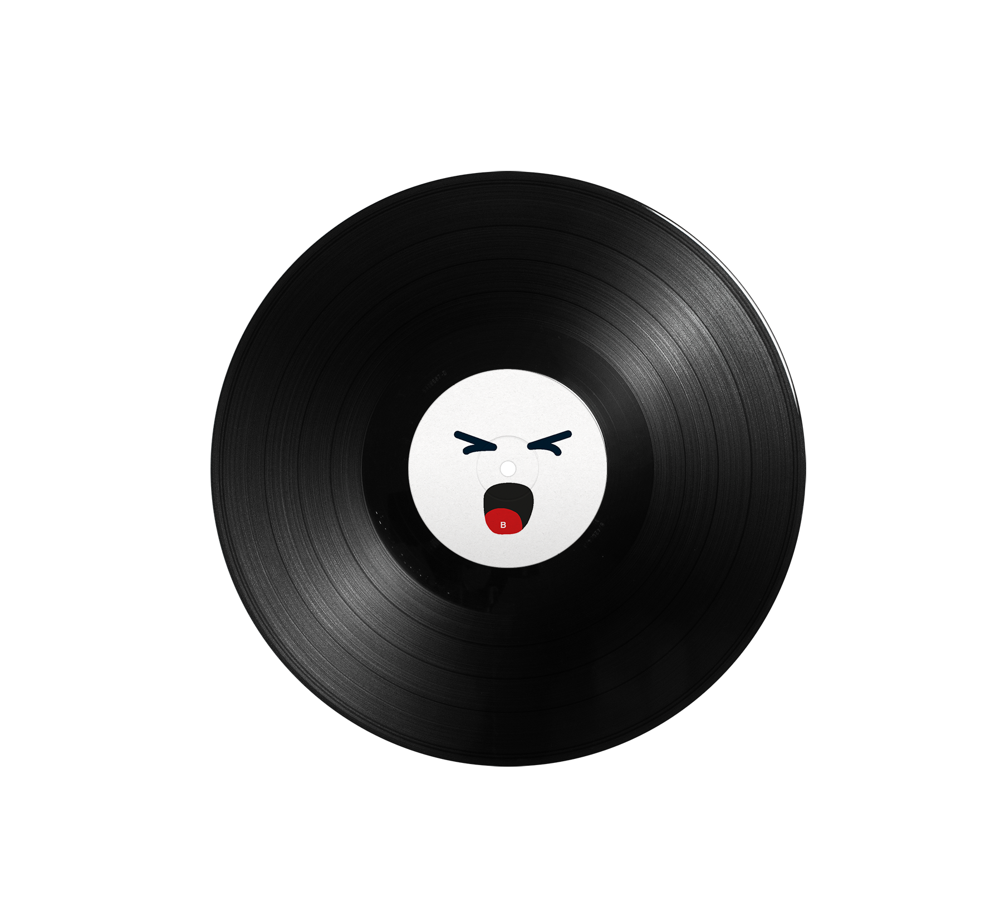

In my second year at Luca School of Arts, we were tasked with designing a football scarf using a
limited set of materials, themed around a sport of our choice. After researching the materials, I
decided to create a scarf inspired by the board game Go.
The contrast between the grid of the board and the round playing stones influenced my design. I drew
further inspiration from a computer version of Go that highlights the best moves with gradient
colors. I used these gradient colors throughout the rest of the scarf.
These colors allowed key elements—such as the repeating "gogogogo" on the back and the white
stone-like dots on the front—to stand out more clearly.


 

This assignment was from my first year at Luca School of Arts, where we were tasked with designing
a vinyl cover for one of the albums from a provided list. I chose "Music for Commercials" by Yasuaki
Shimizu, an album originally created for Japanese TV commercials.
For inspiration, I delved into vintage Japanese commercials, which are known for their vibrant and
colourful aesthetic. During my research, I also discovered tiny smiley faces in
Japanese signage, which was a fun addition to my design. Overall, designing this
vinyl was a fun experience, full of creativity and exploration.